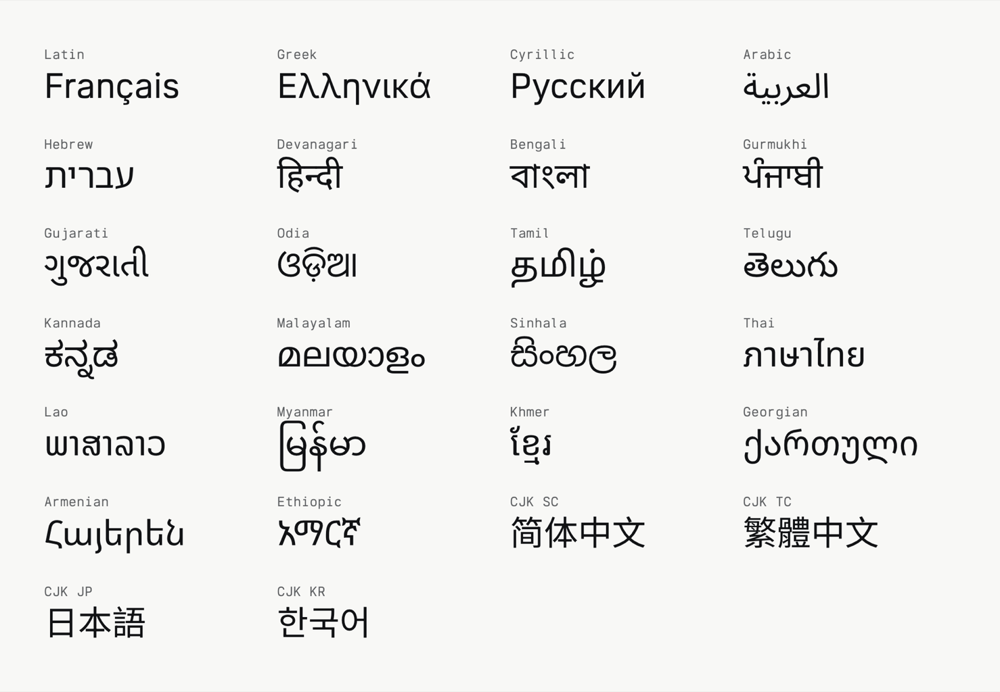

Katagami CJK TC is the Traditional Chinese companion to Katagami, a family of five members built from one source by the same scripts: Katagami Sans, Katagami Round, Katagami Text, Katagami Serif and Katagami Mono. Katagami CJK TC is built from Noto Sans TC. It holds the 13,053 hanzi of Big5 with its CJK symbols and bopomofo, CJK punctuation and the full-width forms.

The file carries the Latin of Katagami Sans in place of the Latin of Noto Sans TC. It covers the Google Fonts Latin core and the auxiliary letters of its languages, with the kerning, marks, language forms and contextual punctuation of Katagami Sans. Latin in Katagami CJK TC sets as it does in Katagami Sans at every weight.
Katagami CJK TC is a variable font with a weight axis from Thin (100) to Black (900), and each weight in steps of 100 is a named instance. Its line metrics hold the line of the Katagami members, so a page can set it in the same CSS family as a member and fetch it only when the text holds Chinese characters.
Katagami CJK TC is released under the SIL Open Font License 1.1.